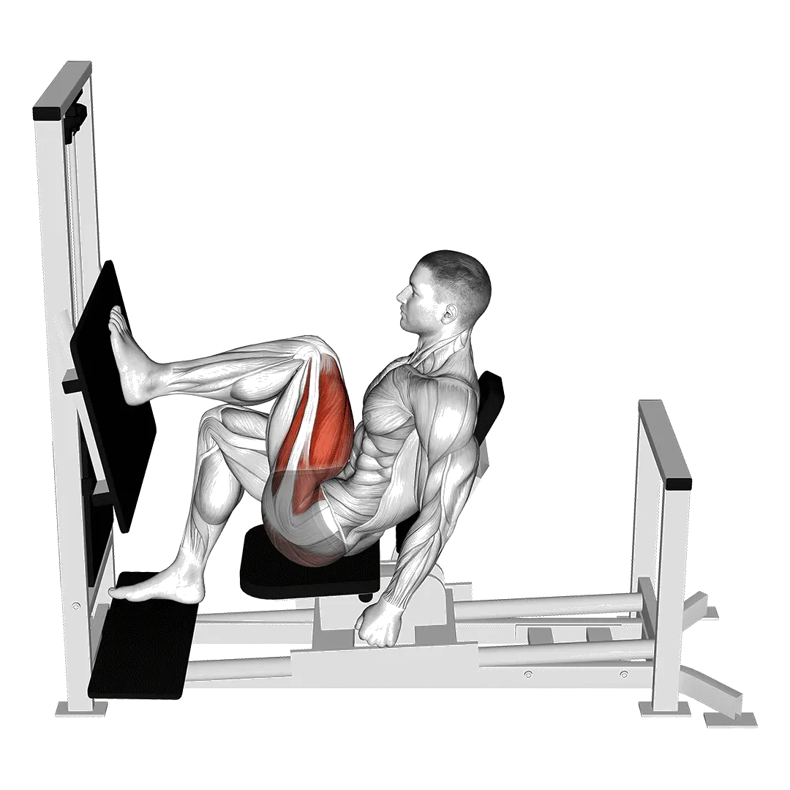

中级平均重量
一般中级训练者的参考值。
男性
314 lb
女性
177 lb
单脚推举平均重量 [1RM]
| 等级 | ||
|---|---|---|
| 初学者 | 73 lb | 45 lb |
| 初级者 | 170 lb | 99 lb |
| 中级者 | 314 lb | 177 lb |
| 进阶者 | 502 lb | 279 lb |
| 菁英 | 722 lb | 397 lb |
注：这些标准是以一般训练者的 1RM 为基准估算。体重、年龄等个人因素都可能造成差异。详细数据请参考下方表格。
单脚推举力量标准(lb)
男性按体重(lb)数据 [1RM]
| 体重 | 初学者 | 初级者 | 中级者 | 进阶者 | 菁英 |
|---|---|---|---|---|---|
| 110 | 19 | 72 | 164 | 293 | 451 |
| 120 | 28 | 88 | 188 | 325 | 491 |
| 130 | 37 | 105 | 212 | 356 | 529 |
| 140 | 48 | 121 | 235 | 386 | 566 |
| 150 | 58 | 138 | 258 | 416 | 601 |
| 160 | 69 | 154 | 280 | 444 | 635 |
| 170 | 80 | 171 | 302 | 471 | 667 |
| 180 | 91 | 187 | 324 | 498 | 699 |
| 190 | 102 | 203 | 345 | 524 | 729 |
| 200 | 114 | 219 | 365 | 549 | 759 |
| 210 | 125 | 234 | 385 | 573 | 787 |
| 220 | 136 | 249 | 404 | 597 | 815 |
| 230 | 147 | 264 | 424 | 620 | 842 |
| 240 | 158 | 279 | 442 | 643 | 869 |
| 250 | 169 | 294 | 461 | 665 | 894 |
| 260 | 180 | 308 | 478 | 686 | 919 |
| 270 | 191 | 322 | 496 | 707 | 943 |
| 280 | 202 | 336 | 513 | 728 | 967 |
| 290 | 213 | 350 | 530 | 748 | 990 |
| 300 | 223 | 363 | 547 | 768 | 1013 |
| 310 | 234 | 377 | 563 | 787 | 1035 |
男性按年龄数据 [1RM]
| 年龄 | 初学者 | 初级者 | 中级者 | 进阶者 | 菁英 |
|---|---|---|---|---|---|
| 15 | 62 | 144 | 267 | 427 | 615 |
| 20 | 71 | 165 | 306 | 489 | 704 |
| 25 | 73 | 170 | 314 | 502 | 722 |
| 30 | 73 | 170 | 314 | 502 | 722 |
| 35 | 73 | 170 | 314 | 502 | 722 |
| 40 | 73 | 170 | 314 | 502 | 722 |
| 45 | 69 | 161 | 298 | 476 | 685 |
| 50 | 65 | 151 | 279 | 447 | 643 |
| 55 | 60 | 140 | 258 | 413 | 595 |
| 60 | 55 | 127 | 236 | 377 | 543 |
| 65 | 50 | 115 | 213 | 341 | 491 |
| 70 | 44 | 103 | 191 | 306 | 440 |
| 75 | 40 | 92 | 171 | 273 | 394 |
| 80 | 36 | 83 | 153 | 245 | 352 |
| 85 | 32 | 74 | 137 | 219 | 316 |
| 90 | 29 | 67 | 124 | 198 | 284 |
女性按体重(lb)数据 [1RM]
| 体重 | 初学者 | 初级者 | 中级者 | 进阶者 | 菁英 |
|---|---|---|---|---|---|
| 90 | 16 | 50 | 105 | 180 | 271 |
| 100 | 22 | 60 | 120 | 200 | 295 |
| 110 | 28 | 70 | 134 | 218 | 317 |
| 120 | 35 | 80 | 148 | 235 | 338 |
| 130 | 41 | 90 | 161 | 252 | 358 |
| 140 | 48 | 100 | 174 | 268 | 377 |
| 150 | 55 | 109 | 186 | 283 | 395 |
| 160 | 61 | 118 | 198 | 298 | 413 |
| 170 | 68 | 127 | 209 | 312 | 429 |
| 180 | 74 | 136 | 221 | 326 | 445 |
| 190 | 80 | 144 | 231 | 339 | 460 |
| 200 | 87 | 153 | 242 | 352 | 475 |
| 210 | 93 | 161 | 252 | 364 | 490 |
| 220 | 99 | 169 | 262 | 376 | 503 |
| 230 | 105 | 177 | 272 | 387 | 517 |
| 240 | 111 | 184 | 281 | 399 | 530 |
| 250 | 117 | 192 | 290 | 410 | 542 |
| 260 | 122 | 199 | 299 | 420 | 555 |
女性按年龄数据 [1RM]
| 年龄 | 初学者 | 初级者 | 中级者 | 进阶者 | 菁英 |
|---|---|---|---|---|---|
| 15 | 38 | 84 | 151 | 237 | 338 |
| 20 | 44 | 96 | 173 | 271 | 386 |
| 25 | 45 | 99 | 177 | 279 | 397 |
| 30 | 45 | 99 | 177 | 279 | 397 |
| 35 | 45 | 99 | 177 | 279 | 397 |
| 40 | 45 | 99 | 177 | 279 | 397 |
| 45 | 43 | 94 | 168 | 264 | 376 |
| 50 | 40 | 88 | 158 | 248 | 353 |
| 55 | 37 | 81 | 146 | 229 | 327 |
| 60 | 34 | 74 | 133 | 209 | 298 |
| 65 | 31 | 67 | 120 | 189 | 269 |
| 70 | 27 | 60 | 108 | 170 | 242 |
| 75 | 25 | 54 | 97 | 152 | 216 |
| 80 | 22 | 48 | 86 | 136 | 193 |
| 85 | 20 | 43 | 77 | 122 | 173 |
| 90 | 18 | 39 | 70 | 110 | 156 |
注：一般健身房的标准杠铃通常为44 lb。
用 Shiba App 记录与分析
集中查看重量、次数与进步变化。
表格说明
| 等级 | 说明 | 分布 |
|---|---|---|
| 初学者 | 掌握正确动作，并持续训练至少 1 个月。 | 后 5% |
| 初级者 | 持续规律训练至少 6 个月。 | 前 80% |
| 中级者 | 持续规律训练至少 2 年。 | 前 50% |
| 进阶者 | 持续规律训练超过 5 年。 | 前 20% |
| 菁英 | 针对该动作专项训练超过 5 年。 | 前 5% |